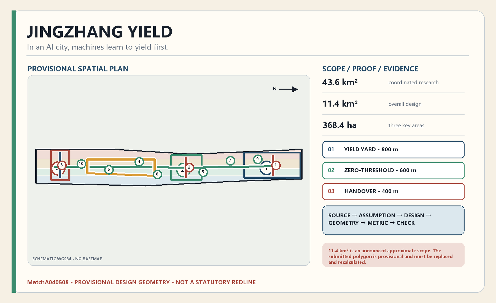
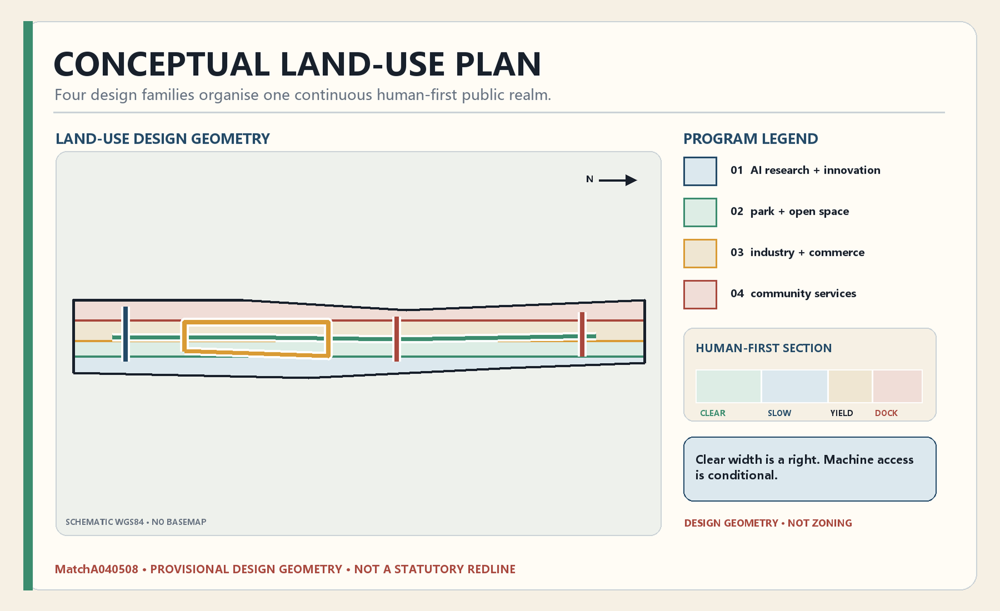
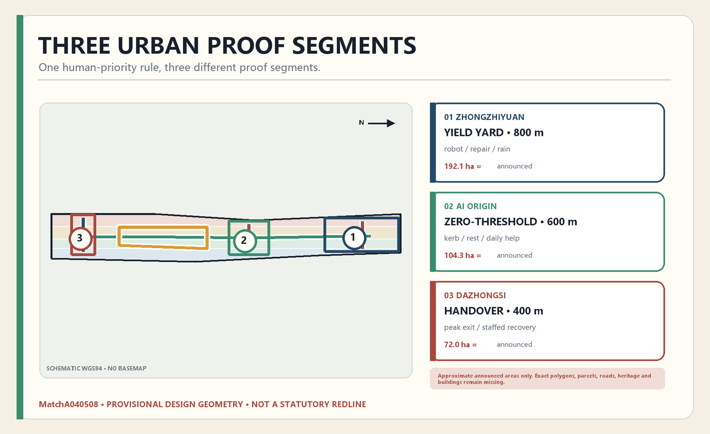
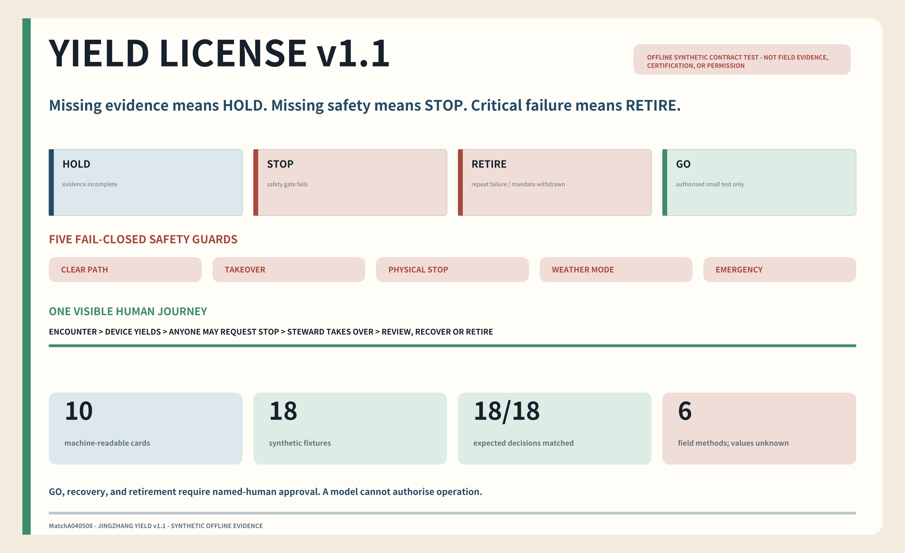
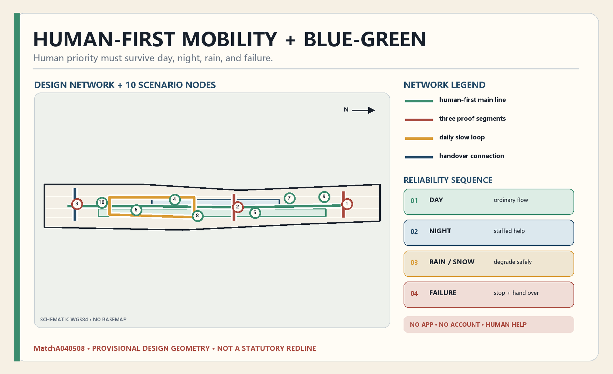
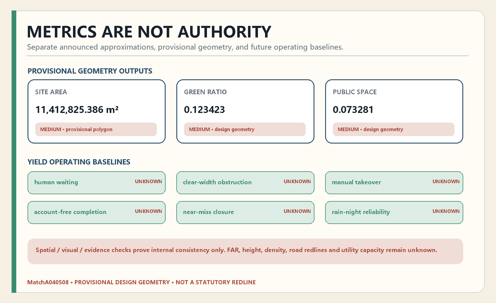

01 · Overview map
Submitted geometry, drawn from the package itself







Field baseline required · derived ratios are design outputs, not existing conditions or approval targets
17 announcement tasks, agent.1–agent.6, and 15 design-depth items.
Official announcement, taskbook, planning and inclusion sources, and eight first-party global cases.
No field survey or stakeholder interview. Formal boundaries, controls, roads, heritage, utilities, and services remain gaps. Readiness is recorded in self_check.json.